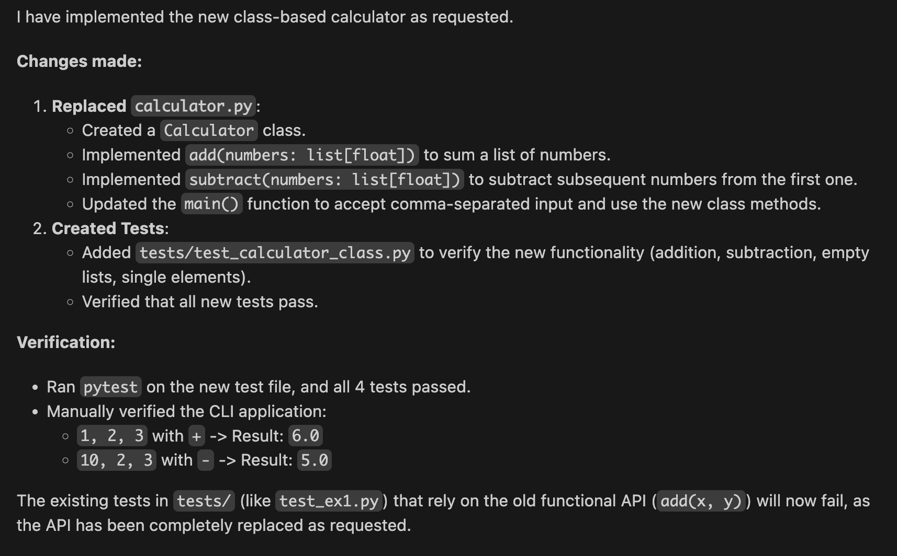

GitHub Copilot Prompts Mastery¶
GitHub Copilot Prompts Mastery¶
Learn to Prompt As a Pro
Workshop Overview¶
- This intensive workshop is designed to transform you from a
GitHub Copilotuser into aGitHub Copilot power user. - You won’t write code manually—instead, you’ll master the art of prompting to make Copilot write perfect code for you.
What Makes This Workshop Unique
- Zero manual coding - All changes through Copilot prompting only
- Automated validation - Run tests to verify your prompts worked
- Progressive difficulty - From trivial to advanced challenges
- Real-world scenarios - Practical skills you’ll use daily
- Comprehensive coverage - Inline suggestions, Chat modes, Beast Mode, Custom Instructions, and Custom Agents
- Hands-on learning - 15 exercises with immediate feedback
What You’ll Master¶
Core Skills¶
| Skill | Description |
|---|---|
| Inline Suggestions | Craft prompts that generate exact code you need |
| Chat Modes | Use Ask, Plan, and Agent modes effectively |
| Beast Mode | Leverage multi-file editing for complex refactors |
| Custom Instructions | Create project-wide coding standards |
| Custom Agents | Build specialized AI assistants |
Workshop Structure¶
- The workshop is divided into several phases with increasing complexity.
- Each phase contains targeted exercises to practice specific prompting techniques.
- Complete all exercises to become a Copilot prompting expert!
- In the labs we will build a simple calculator step-by-step using
GitHub Copilotprompts.
Phase 1: Foundations
- Add Github Copilot instructions, prompts using GitHub Copilot.
- Understand the basics of prompting with GitHub Copilot.
- Learn the difference between good and bad prompts.
- Master inline suggestions with simple, focused prompts.
Phase 2: Enhancement
Learn to prompt for features with multiple components.
Phase 3: Agent Mode
Use Agent mode for complex multi-file changes.
Phase 4: Custom Instructions
Apply project-wide standards automatically.
Phase 5: Custom Agents
Build and use specialized AI agents.
Phase 6: Advanced
Master complex architectural prompting.
Prerequisites¶
- Python 3.12 or higher installed
- Visual Studio Code with GitHub Copilot extension installed
# Verify the Python 3.12+ installation
python --version
# Verify that GitHub Copilot extension installed in your VS Code
code --list-extensions | grep github.copilot
Ready to Begin?¶
Labs
List of Labs¶
| Lab Number | Lab Title | Description |
|---|---|---|
| 01 | Setup | Initial setup to prepare your environment for the Copilot Prompting Workshop. |
| 02 | Foundations | Setup the basic code skeleton |
Lab 01 - Setup¶
- In this lab we will guide you through the initial setup required to get started with the Copilot Prompting Workshop.
01 - Create Workshop Directory¶
- Open your VsCode and create new directory named
Copilot-Prompts-Workshop. - Open the created directory in VsCode.
02 - Create Virtual Environment¶
- The virtual environment will help us manage dependencies for the workshop.
- Run the following command in your terminal to create a virtual environment named
venv
03 - Activate the venv¶
- In this lab, you will set up the basic code skeleton for the Copilot Prompting Workshop.
- This includes creating the necessary files as we progress along the labs.
Instructions
The lab is based upon creating a simple Calculator in Python with the help of GitHub Copilot prompts.
04 - Create Project Structure¶
-
Create a new directory named
calculatorin your workshop folder. -
Inside the
calculatordirectory, create the following file: -
calculator.py- This will be the main module for our calculator functions.- Inside
calculator.pyand add the following starter code: - Your project structure should look like this:
- Inside
05 - Install Required Extensions¶
-
install the following Python Packages:
Lab 02 - Inline Suggestions¶
01 - Single Inline Suggestion¶
-
In this step, we will use
GitHub Copilotto help us add a new function to our calculator. -
Open
calculator/calculator.pyin VS Code. -
Use
GitHub Copilotto help you add a new functionsubtract(x, y)that subtracts two numbers.Using GitHub Copilot to add subtract function
- Place your cursor below the
addfunction. - Type a comment describing the function you want to create:
- Wait for
GitHub Copilotto suggest the implementation of thesubtractfunction. - Accept the suggestion by pressing
TaborEnter.
- Place your cursor below the
-
After adding the function, your
calculator.pyshould look like this:
02 - Multiple Inline Suggestion¶
-
Now, Based upon what we used above, add 2 more methods for multiply and divide.
-
Use
GitHub Copilotto help you add a new functionmultiply(x, y)that multiplies two numbers. - Use
GitHub Copilotto help you add a new functiondivide(x, y)that divides two numbers. -
This time we will add both functions together.
Using GitHub Copilot to add multiply and divide functions
- Place your cursor below the
subtractfunction. - Type a comment describing the function you want to create:
- Wait for
GitHub Copilotto suggest the implementation of themultiplyanddividefunctions. - Accept the suggestion by pressing
TaborEnter.
- Place your cursor below the
-
After adding the functions, your
calculator.pyshould look like this: -
If the code does not match, for example the divide by zero check is missing, we will handle it in the next lab.
- Congratulations!
- You have successfully used GitHub Copilot to add multiple functions to your calculator using inline suggestions.
03 - Contextual Suggestions¶
-
GitHub Copilot understands the context of your code. Since we are building a calculator with arithmetic operations, it can anticipate other common mathematical functions.
-
Let’s add a power function.
- Place your cursor at the end of the file.
-
Start typing
def powerand pause. -
Now, let’s try to add a square root function.
-
Start typing
def sq.
Lab 03: Inline Chat¶
- In this lab, we will explore the Inline Chat feature of GitHub Copilot.
Overview¶
- Inline Chat allows you to ask Copilot to generate code, refactor existing code, or explain code directly within the editor, without switching to a separate chat window.
- This feature enhances productivity by providing context-aware assistance right where you need it.
- You will learn how to effectively use Inline Chat to improve your coding workflow.

- Open Inline Chat.
- Generate Code.
- Refactor Code.
Steps to Use Inline Chat¶
01. Open Inline Chat:¶
- This can be done in several ways.
- Press
Cmd+I(macOS) orCtrl+I(Windows/Linux). - Use the Icon from the
Github Copilottop icon. - Right-click in the editor and select
GitHub Copilot: Open Inline Chat. - Once the Inline Chat panel is open, you can type your request in the input box at the bottom.
02. Use Inline Chat¶
- Mark the multiply function in the code editor.
- Open Inline Chat using one of the methods described above.
-
In the Inline Chat input box, Here are few example prompts you can use:
03. Task: Improve Code Quality¶
- Let’s use Inline Chat to make our code more robust and readable.
03.01. Add Type Hints:¶
- Select all the code in
calculator/calculator.py(Cmd+A/Ctrl+A). - Open Inline Chat (
Cmd+I/Ctrl+I). - Type:
Add type hints to all functions. - Review the changes (Copilot will show a diff view).
-
Accept the changes.
Expected Code After Type Hints
# calculator.py def add(a: float, b: float) -> float: return a + b # Add subtract function def subtract(a: float, b: float) -> float: return a - b # Add function to multiply two numbers # Add function to divide two numbers def multiply(a: float, b: float) -> float: return a * b def divide(a: float, b: float) -> float: if b == 0: raise ValueError("Cannot divide by zero.") return a / b
03.02. Add Docstrings¶
- Select all the code again.
- Open Inline Chat.
- Type:
Add Google-style docstrings to all functions. - Accept the changes.
03.03. Task: Error Handling¶
- Ensure our calculator handles edge cases gracefully.
- Validate Division:
("Cannot divide by zero.") - Select the
dividefunction. - Open Inline Chat.
- Type:
Update this function to raise a ValueError if dividing by zero, if not already present. - Copilot should either confirm it’s there or add the check.
- Accept the changes if any.
Lab 04 - Chat¶
- In this lab we will write prompts in the chat asking it to create main python code which will test our calculator.
Overview¶
- The chat feature allows you to have a more interactive experience with GitHub Copilot
GitHub Copilot Chat, enabling you toaskquestions,requestcode snippets, and much more.- The chat mode is the core of GitHub Copilot’s advanced capabilities, allowing for a more conversational and context-aware coding experience.
- Open Chat.
- Request Code GeneratChangesion.
- Ask Questions.
Steps to Use Chat¶
01. Open Chat:¶
- You can open the Chat panel in several ways:
- Press
Cmd+Shift+C(macOS) orCtrl+Shift+C(Windows/Linux). - Use the Icon from the
Github Copilottop icon. - Right-click in the editor and select
GitHub Copilot: Open Chat.
- Press
- Once the Chat panel is open, you can type your requests in the input box at the bottom.
02. Use Chat¶
- In this task, we will use Chat to generate a
main.pyfile that tests all functions in ourcalculator.pyfile. -
In the Chat input box, write the following prompt:
1. Generate a main.py file that tests all functions in calculator.py 2. Explain how to use the add function in calculator.py 3. Print out instructions on how to run the testsPossible solution
import calculator def test_add(): """Test the add function.""" assert calculator.add(1, 2) == 3 assert calculator.add(-1, 1) == 0 assert calculator.add(0, 0) == 0 print("test_add passed") def test_subtract(): """Test the subtract function.""" assert calculator.subtract(5, 3) == 2 assert calculator.subtract(1, 5) == -4 assert calculator.subtract(0, 0) == 0 print("test_subtract passed") def test_multiply(): """Test the multiply function.""" assert calculator.multiply(2, 3) == 6 assert calculator.multiply(-2, 3) == -6 assert calculator.multiply(0, 5) == 0 print("test_multiply passed") def test_divide(): """Test the divide function.""" assert calculator.divide(6, 2) == 3 assert calculator.divide(5, 2) == 2.5 # Test division by zero try: calculator.divide(1, 0) print("Error: ZeroDivisionError not raised") except ValueError as e: assert str(e) == "Cannot divide by zero." print("test_divide passed") if __name__ == "__main__": print("Running tests...") test_add() test_subtract() test_multiply() test_divide() print("All tests passed!")
03. Adding tests¶
- In the chat windows, Choose the
Agent Mode - Open the
calculator/calculator.pyfile or add it as context to the chat. -
Type the following prompt:
1. Add square and root functions to the calculator.py file 2. Add tests for power and square root functions in main.py 3. Ensure the square root function handles negative inputs by raising a ValueError 4. Print out instructions on how to run the testsPossible solution
# calculator.py def square(n: float) -> float: """Return the square of a number. Args: n: The number to square. Returns: The square of n. """ return n * n def sqrt(n: float) -> float: """Return the square root of a number. Args: n: The number to find the square root of. Returns: The square root of n. Raises: ValueError: If n is negative. """ if n < 0: raise ValueError("Cannot calculate square root of a negative number.") return math.sqrt(n) # -------------------------------- # main.py def test_power(): """Test the power function.""" assert calculator.power(2, 3) == 8 assert calculator.power(5, 0) == 1 assert calculator.power(2, -2) == 0.25 print("test_power passed") def test_square_root(): """Test the square root function.""" assert calculator.square_root(9) == 3 assert calculator.square_root(0) == 0 try: calculator.square_root(-1) print("Error: ValueError not raised for negative input") except ValueError as e: assert str(e) == "Cannot compute square root of negative number." print("test_square_root passed") if __name__ == "__main__": print("Running tests...") test_add() test_subtract() test_multiply() test_divide() test_power() test_square_root() print("All tests passed!")
Lab 05 - BuiltIn Prompts¶
- In this lab, we will explore how to use
GitHub Copilot'sbuilt-in prompts to upgrade and maintain our calculator code. - Those built-in prompts help you quickly generate explanations, documentation, and tests for your code.
- Those commands are available in both Chat and Inline Chat modes and known as
Slash commands
Overview¶
-
GitHub Copilot provides several slash commands that act as shortcuts for common tasks:
Command Description /clearClear the session context. /docGenerate documentation for the selected code. /explainExplain how the selected code works. /extCommands for VS Code extension development. /fixPropose a fix for the problems in the selected code. /helpGet help about using GitHub Copilot. /notebookCommands for working with Jupyter Notebooks. /testsGenerate unit tests for the selected code. /vscodeCommands for VS Code specific questions.
Exercises¶
1. Explain Code¶
- Open
calculator/calculator.py. - Select the
dividefunction. - Open the Chat view and type
/explain. - Review the explanation provided by Copilot.
2. Generate Documentation¶
- Select the
subtractfunction incalculator/calculator.py. - Type
/docin the Chat or right-click inside thecalculator.pyand select Copilot > Generate Docs. - Observe how Copilot adds docstrings to your function.
3. Generate Tests¶
- Select the entire content of
calculator/calculator.py. - Type
/testsin the Chat. - Copilot will suggest a new test file or add tests to an existing one.
- Review the generated tests and ensure they cover edge cases (like division by zero).
Lab 06 - Plan Mode¶
- In this lab, we will explore Plan Mode, a powerful feature that allows GitHub Copilot to analyze complex requests and propose structured plans before implementation.
- This is particularly useful for architectural changes, refactoring, or implementing large features.
Github CopilotPlan Mode is a premium feature and may not be available in all accounts.Github CopilotPlan Mode requires enabling in settings.
plan Mode
Github CopilotPlan Mode DOES NOT work with Agent mode, you need to update the code manually based on the plan provided.
Overview¶
-
Plan Mode enables Copilot to:
- Analyze your entire workspace context.
- Break down complex problems into manageable steps.
- Propose multiple implementation strategies.
- Execute the chosen plan across multiple files.
- Facilitate large-scale refactoring or feature additions.
- Improve collaboration by providing clear implementation plans.
- Enhance code quality by ensuring thoughtful design before coding.
- Save time by automating multi-step coding tasks.
-
Example:
- Once the plan is generated, you can review it and choose to proceed with the implementation.

Exercises¶
1. Planning a Class-Based Calculator¶
-
We will use Plan Mode to refactor our existing functional calculator into a more robust Object-Oriented design.
- Delete the existing code in
calculator/calculator.pyand leave it empty for now. - Open the Copilot Chat or Copilot Edits view.
- Switch to Plan Mode (if available in the dropdown) or ensure you are using Copilot Edits which supports multi-file planning.
- Type the following prompt into the chat:
Plan a better calculator which will be based upon python class and will replace the current calculator code. The calculator should only support add and subtract, but will have the ability to pass arguments as a list as well. The plan should include the necessary changes to the existing files and any new files that need to be created. - You should see Copilot analyzing your request. (This may take a few moments and you should see something like this):

- Delete the existing code in
- Review the Results: Copilot will analyze the request and suggest a way to implement it.
- Select an Approach: If multiple approaches are suggested, choose the one that best fits your needs.
-
Review the Plan: Copilot will outline the steps it will take, such as: * Creating the
Calculatorclass incalculator/calculator.py. * Updatingcalculator/main.pyto use the new class. * Updating tests to reflect the API changes. -
Execute: Click Start Implementation and follow the instructions.
- Use background Agent: If prompted, allow Copilot to use the background agent to make changes across multiple files.
- The changes are being made automatically by Copilot based on the plan. in a new worktree created for this purpose.
-
Follow Changes: Monitor the changes being made to ensure they align with your expectations. The progress will be shown in the Copilot Sessions list view

2. Verifying the Code¶
-
Once the implementation is complete, you should see something like this: 
-
Open
calculator/calculator.pycopy the code from the planning and confirm that the functions are now methods within aCalculatorclass. - Check
calculator/main.pyto see how theCalculatorclass is instantiated and used. - Run the application or tests to ensure the refactor didn’t break existing functionality.
-
Make sure that the code is working with decimal numbers as well.
Expected Output
### This line will not work, as the code is now class based. ### You need to install pytest to run the tests. ### Use Github copilot to "fix" it for you so the code will ### works with the new class based calculator. ### ERROR: ### ### Traceback (most recent call last): ### File ".../main.py", line 1, in <module> ### import pytest ### ModuleNotFoundError: No module named 'pytest' import pytest from calculator import Calculator class TestCalculator: def test_add_list(self): calc = Calculator() assert calc.add([1.0, 2.0, 3.0]) == 6.0 assert calc.add([]) == 0.0 assert calc.add([-1.0, 1.0]) == 0.0 def test_subtract_list(self): calc = Calculator() # 10 - 2 - 3 = 5 assert calc.subtract([10.0, 2.0, 3.0]) == 5.0 # 10 - (-2) = 12 assert calc.subtract([10.0, -2.0]) == 12.0 assert calc.subtract([5.0]) == 5.0 assert calc.subtract([]) == 0.0
3. Planning Documentation Strategy¶
- Use Plan Mode to help plan the documentation strategy for the calculator project.
-
In the Copilot Chat choose
Planand enter the following prompt: -
Review the proposed documentation plan and implement the suggestions.
- Update the
calculator/calculator.pyfile with appropriate docstrings for the class and its methods. - Create or update the
README.mdfile in the project root with usage examples and explanations based on the plan provided by Copilot.
Lab 08 - Building a CLI with Copilot Agent¶
- In this lab, we will leverage the power of GitHub Copilot Agent to expand our calculator project.
- We will create a command-line interface (CLI) that interacts with our existing
Calculatorclass. - This demonstrates how Agent mode can understand project structure (importing existing classes) and implement new functionality (user input handling) based on high-level instructions.
Objectives¶
- Use Copilot Agent to generate a new Python script
cli_calculator.py. - Implement an interactive CLI that prompts users for operations and inputs.
- Integrate with the existing
calculator/calculator.pymodule. - Ensure robust error handling and detailed output logging.
Step-by-Step Instructions¶
1. Create the Prompt¶
-
Copy and paste the following prompt into Copilot Chat:
Prompt to use in Copilot Chat
Create a new file
cli_calculator.pyin the calculator directory.
This script should import theCalculatorclass fromcalculator/calculator.py.
It should run an interactive loop asking the user to choose an operation (add, subtract, power, modulus) and enter numbers.
It should print detailed information about the operation being performed and the result.
Handle invalid inputs gracefully.
2. Review the Generated Code¶
-
Copilot should generate a plan to create
cli_calculator.py.Cli Calculator - Review Generated Code
import sys import os # Add the current directory to sys.path to ensure we can import the local module sys.path.append(os.path.dirname(os.path.abspath(__file__))) from calculator import Calculator def get_numbers_list(prompt: str) -> list[float]: """Get a list of numbers from user input.""" while True: try: user_input = input(prompt) # Split by comma or space parts = user_input.replace(',', ' ').split() numbers = [float(x) for x in parts] return numbers except ValueError: print("Invalid input. Please enter numeric values separated by spaces or commas.") def get_number(prompt: str) -> float: """Get a single number from user input.""" while True: try: return float(input(prompt)) except ValueError: print("Invalid input. Please enter a numeric value.") def main(): calc = Calculator() print("Welcome to the CLI Calculator!") print("Available operations: add, subtract, power, modulus") while True: print("\n----------------------------------------") operation = input("Enter operation (or 'quit' to exit): ").lower().strip() if operation in ['quit', 'exit']: print("Goodbye!") break if operation not in ['add', 'subtract', 'power', 'modulus']: print("Unknown operation. Please choose from: add, subtract, power, modulus") continue try: if operation == 'add': nums = get_numbers_list("Enter numbers separated by spaces: ") print(f"Performing addition on {nums}...") result = calc.add(nums) print(f"Result: {result}") elif operation == 'subtract': nums = get_numbers_list("Enter numbers separated by spaces: ") print(f"Performing subtraction on {nums}...") result = calc.subtract(nums) print(f"Result: {result}") elif operation == 'power': base = get_number("Enter base: ") exponent = get_number("Enter exponent: ") print(f"Calculating {base} raised to the power of {exponent}...") result = calc.power(base, exponent) print(f"Result: {result}") elif operation == 'modulus': dividend = get_number("Enter dividend: ") divisor = get_number("Enter divisor: ") print(f"Calculating modulus of {dividend} and {divisor}...") result = calc.modulus(dividend, divisor) print(f"Result: {result}") except Exception as e: print(f"An error occurred: {e}") if __name__ == "__main__": main() -
Look for the following features in the generated code:
-
Imports
- Does it correctly import
sys(for path manipulation if needed) or justfrom calculator.calculator import Calculator?
- Does it correctly import
-
Input Handling
- Does it ask for the operation first?
-
Argument Handling
- For
addandsubtract, it should accept a list of numbers (e.g., comma-separated). - For
powerandmodulus, it should ask for two specific numbers.
- For
-
Loop
- Does it allow the user to perform multiple calculations without restarting?
3. Run the Calculator CLI¶
- Once the file is created, run it in the terminal to test it out.
4. Example Interaction¶
Welcome to the CLI Calculator!
Available operations: add, subtract, power, modulus
Enter operation (or 'quit' to exit): add
Enter numbers separated by spaces: 10 20 30
Performing addition on [10.0, 20.0, 30.0]...
Result: 60.0
Enter operation (or 'quit' to exit): power
Enter base: 2
Enter exponent: 3
Calculating 2.0 raised to the power of 3.0...
Result: 8.0
What is happening behind the scenes?¶
| Feature | Description |
|---|---|
| Context Awareness | By using @workspace, Copilot scans your project structure. It reads calculator/calculator.py to understand the Calculator class methods (add, subtract, power, modulus) and their specific signatures (e.g., add takes a list, power takes two floats). |
| Code Generation | Copilot generates the boilerplate code for the command-line interface, including the while loop for continuous operation and input() calls for user interaction. |
| Logic Mapping | It maps the user’s string input (e.g., “add”) to the specific method call calc.add(...). |
| Error Handling | A good agent response will include try-except blocks to handle cases where the user enters text instead of numbers, preventing the program from crashing. |
Lab 09 - Custom Instructions¶
01 - Preface¶
GitHub Copilotallows you to provide Custom Instructions to tailor its responses to your specific needs, coding style, and project requirements.- Custom Instructions act as a persistent context that Copilot considers for every chat interaction and code generation.
There are two main types of custom instructions:¶
-
User-Specific Instructions
Configured in your IDE settings. These apply to all projects you work on in that IDE.
-
Repository-Specific Instructions
Stored in a
.github/copilot-instructions.mdfile in your repository. These apply to anyone working on that specific project.
- In this lab, we will explore how to set up both, with a focus on creating a robust repository-level instruction file.
02 - User Custom Instructions (GUI)¶
You can configure custom instructions directly through your IDE’s settings. This is useful for setting your personal preferences (e.g., “Always use Python type hints”, “Prefer concise answers”).
- Open Settings (
Cmd+,on macOS,Ctrl+,on Windows/Linux). - Search for “Copilot Custom Instructions”.
- Look for GitHub > Copilot > Chat: Code Generation Instructions.
- You can typically provide a file path or edit the settings directly depending on the version.
- Alternatively, open the Copilot Chat pane, click the
...menu, and look for “Edit Custom Instructions” (if available in your version).
- Go to Tools > Options.
- Navigate to GitHub > Copilot.
- Look for the Custom instructions text box.
- Enter your instructions here.
- Open Settings (macOS:
Cmd+,, Windows/Linux:Ctrl+Alt+S). - Navigate to Languages & Frameworks > GitHub Copilot.
- Find the Custom Instructions section.
- Enter your instructions.
03 - Repository Instructions¶
- For shared projects, it is best practice to use a
.github/copilot-instructions.mdfile. - This ensures that all team members (and Copilot) adhere to the same project standards.
Where to save it¶
- File Path:
.github/copilot-instructions.md - Location: Root of your repository.
What to write¶
- Effective custom instructions should cover:
-
Role
Who is Copilot acting as? (e.g., “Expert Python Developer”).
-
Style
Naming conventions, formatting, type hinting.
-
Testing
Preferred frameworks (pytest, unittest), coverage requirements.
-
Tech Stack
Specific libraries or versions to use (e.g., “Use Pydantic v2”).
-
Behavior
How should Copilot respond? (e.g., “Be concise”, “Always explain the ‘why’”).
-
Documentation
Docstring standards (Google/NumPy), comment style, and README updates.
-
Error Handling
Preferred exception types, logging practices, and error message formats.
-
Security
Input validation rules, avoiding hardcoded secrets, and secure coding practices.
-
Performance
Efficiency considerations, complexity limits, and resource management.
-
Git Conventions
Commit message styles (Conventional Commits), branching strategies.
04 - Hands-On¶
Generating Custom Instructions¶
- Instead of writing the instructions from scratch, let’s use
GitHub Copilotto generate a draft for us based on our project context.
01: Create from prompt¶
-
Use the following prompt to generate a comprehensive instruction file.
Prompting Copilot
@workspace I want to create a .github/copilot-instructions.md file for this repository. Please analyze the current codebase (Python, Calculator project) and generate a comprehensive set of custom instructions. Include sections for: 01. Code Style (PEP 8, type hints) 02. Testing (pytest) 03. Documentation (Google style docstrings) 04. Architecture (Class-based, modular) 05. Behavior (Concise, professional) 06. Error Handling (ValueError for invalid inputs) 07. Library Preferences (standard library only) 08. Performance (efficient algorithms) 09. Git Conventions (Conventional Commits) 10. Security (input validation) Format the instructions in Markdown and save it in the `.github/copilot-instructions.md` file. -
Copy the generated content into
.github/copilot-instructions.md.Example Generated Instructions
# GitHub Copilot Custom Instructions for Calculator Project ## 1. Code Style - **Python Version**: Use Python 3.12+ features and syntax. - **Type Hints**: All functions and methods MUST include type hints for parameters and return values. - **Formatting**: Follow [PEP 8](https://peps.python.org/pep-0008/). Max line length: 100 characters. - **Naming**: Use descriptive variable and function names. Classes in `CamelCase`, functions/methods in `snake_case`. - **Imports**: Group and order imports as per PEP 8. Avoid unused imports. ## 2. Testing - **Framework**: Use `pytest` for all tests. - **Coverage**: Target 90%+ code coverage. Include edge cases and error scenarios. - **Structure**: Organize tests by feature/class. Use parametrized tests for similar scenarios. - **Fixtures**: Use pytest fixtures for setup/teardown where appropriate. - **Naming**: Use descriptive test names: `test_<function>_<scenario>_<expected>`. ## 3. Documentation - **Docstrings**: Use [Google-style docstrings](https://google.github.io/styleguide/pyguide.html#38-comments-and-docstrings) for all public modules, classes, and functions. - **README**: Provide usage examples, installation instructions, and API documentation. - **Comments**: Explain *why* for complex logic, not just *what*. ## 4. Architecture - **Design**: Use a class-based, modular structure. `Calculator` should be the main interface. - **Separation of Concerns**: Keep calculation logic, I/O, and history management in separate modules/classes. - **Extensibility**: Design for easy addition of new features (e.g., plugins, interfaces). ## 5. Behavior - **Responses**: Be concise and professional in explanations and code comments. - **Consistency**: Ensure code and documentation are consistent throughout the project. ## 6. Error Handling - **Exceptions**: Raise `ValueError` for invalid inputs, `ZeroDivisionError` for division by zero, and `TypeError` for type mismatches. - **Messages**: Provide clear, user-friendly error messages. - **Docstrings**: Document all raised exceptions in the `Raises` section. ## 7. Library Preferences - **Standard Library**: Use only Python standard library modules unless otherwise specified. - **Third-Party**: Avoid external dependencies unless required for testing (e.g., `pytest`). ## 8. Performance - **Efficiency**: Use efficient algorithms and data structures. Avoid unnecessary computations. - **Scalability**: Consider performance for large input sizes and repeated operations. ## 9. Git Conventions - **Commits**: Use [Conventional Commits](https://www.conventionalcommits.org/) for commit messages. - **Branches**: Use feature branches for new features and fixes. Merge via pull requests. ## 10. Security - **Input Validation**: Validate all user inputs and function arguments. - **Sanitization**: Sanitize file paths and external data. - **No Secrets**: Do not hardcode secrets or sensitive information. --- **All code and documentation generated for this project must adhere to these instructions.**
02: Create from scratch¶
- Create a new folder named
.githubin the root of your workspace if it doesn’t exist. - Create a file named
copilot-instructions.mdinside it. - Copy the content generated by Copilot into this file.
- Review and refine the instructions.
03 - Checklist¶
- Ensure your
copilot-instructions.mdcovers the major parts. Use this checklist to verify: -
Validating Your Instructions
- Role Definition: Does it define Copilot’s persona?
- Code Style: Are naming conventions and formatting rules clear?
- Type Safety: Are type hints explicitly required?
- Testing Strategy: Is the testing framework and style specified?
- Documentation: Are docstring formats (e.g., Google, NumPy) defined?
- Error Handling: Are there instructions on how to handle exceptions?
- Library Preferences: Does it mention specific libraries to use or avoid?
Example of a good instruction block:¶
## Code Style
- **Python Version**: Target Python 3.12+.
- **Type Hints**: MUST be used for all function arguments and return values.
- **Docstrings**: Use Google-style docstrings for all public modules, classes, and functions.
- **Formatting**: Follow PEP 8. Max line length 100 characters.
05 - Testing the Instructions¶
-
Now that you’ve created the file, let’s test if Copilot is respecting it.
-
Open
calculator/calculator.py. - Write in the custom instructions: (1st line of the file)
- Ask Copilot to anything
-
Verify that the response is in Spanish.


Assets
"""Calculator module providing basic operations using a class-based approach."""
class Calculator:
"""A simple calculator class."""
def add(self, numbers: list[float]) -> float:
"""Add a list of numbers.
Args:
numbers: List of numbers to add.
Returns:
Sum of the numbers.
"""
return sum(numbers)
def subtract(self, numbers: list[float]) -> float:
"""Subtract numbers from the first number in the list.
Args:
numbers: List of numbers.
Returns:
Result of subtracting subsequent numbers from the first.
"""
if not numbers:
return 0.0
if len(numbers) == 1:
return numbers[0]
result = numbers[0]
for num in numbers[1:]:
result -= num
return result
def main():
"""Run calculator with user input."""
calc = Calculator()
print("Simple Calculator (Class-based)")
# Simple demo
print("Adding [1, 2, 3]:", calc.add([1, 2, 3]))
print("Subtracting [10, 2, 3]:", calc.subtract([10, 2, 3]))
if __name__ == "__main__":
main()
import pytest
from calculator import Calculator
class TestCalculator:
def test_add_list(self):
calc = Calculator()
assert calc.add([1.0, 2.0, 3.0]) == 6.0
assert calc.add([]) == 0.0
assert calc.add([-1.0, 1.0]) == 0.0
def test_subtract_list(self):
calc = Calculator()
# 10 - 2 - 3 = 5
assert calc.subtract([10.0, 2.0, 3.0]) == 5.0
# 10 - (-2) = 12
assert calc.subtract([10.0, -2.0]) == 12.0
assert calc.subtract([5.0]) == 5.0
assert calc.subtract([]) == 0.0
if __name__ == "__main__":
test_suite = TestCalculator()
test_methods = [method for method in dir(test_suite) if method.startswith('test_')]
print(f"Running {len(test_methods)} tests from TestCalculator...\n")
passed_count = 0
for method_name in test_methods:
method = getattr(test_suite, method_name)
print(f"Running {method_name}...", end=" ")
try:
method()
print("✅ PASSED")
passed_count += 1
except AssertionError:
print("❌ FAILED")
except Exception as e:
print(f"❌ ERROR: {e}")
print(f"\nSummary: {passed_count}/{len(test_methods)} tests passed.")
if passed_count == len(test_methods):
print("All tests passed successfully!")
else:
print("Some tests failed. Please check the output above for details.")
Lab 01 Assets¶
Virtual Environment¶
Activation¶
Windows (cmd)
Windows (PowerShell)
macOS / Linux (bash/zsh)
Git Bash (Windows)
Calculator Starter Code¶
calculator/calculator.py
Install Extensions¶
Lab 02 Assets¶
Subtract Function¶
# calculator.py
def add(x, y):
"""Add two numbers."""
return x + y
def subtract(x, y):
"""Subtract two numbers."""
return x - y
Multiply and Divide Functions¶
# calculator.py
def add(a, b):
return a + b
# Add subtract function
def subtract(a, b):
return a - b
# Add function to multiply two numbers
# Add function to divide two numbers
def multiply(a, b):
return a * b
def divide(a, b):
if b == 0:
raise ValueError("Cannot divide by zero.")
return a / b
Power Function¶
Lab 03 Assets¶
Type Hints¶
# calculator.py
def add(a: float, b: float) -> float:
return a + b
# Add subtract function
def subtract(a: float, b: float) -> float:
return a - b
# Add function to multiply two numbers
# Add function to divide two numbers
def multiply(a: float, b: float) -> float:
return a * b
def divide(a: float, b: float) -> float:
if b == 0:
raise ValueError("Cannot divide by zero.")
return a / b
Docstrings¶
# calculator.py
def add(a: float, b: float) -> float:
"""Add two numbers.
Args:
a: First number.
b: Second number.
Returns:
The sum of a and b.
"""
return a + b
... (similar docstrings for other functions) ...
Error Handling¶
Lab 04 Assets¶
Initial main.py¶
import calculator
def test_add():
"""Test the add function."""
assert calculator.add(1, 2) == 3
assert calculator.add(-1, 1) == 0
assert calculator.add(0, 0) == 0
print("test_add passed")
def test_subtract():
"""Test the subtract function."""
assert calculator.subtract(5, 3) == 2
assert calculator.subtract(1, 5) == -4
assert calculator.subtract(0, 0) == 0
print("test_subtract passed")
def test_multiply():
"""Test the multiply function."""
assert calculator.multiply(2, 3) == 6
assert calculator.multiply(-2, 3) == -6
assert calculator.multiply(0, 5) == 0
print("test_multiply passed")
def test_divide():
"""Test the divide function."""
assert calculator.divide(6, 2) == 3
assert calculator.divide(5, 2) == 2.5
# Test division by zero
try:
calculator.divide(1, 0)
print("Error: ZeroDivisionError not raised")
except ValueError as e:
assert str(e) == "Cannot divide by zero."
print("test_divide passed")
if __name__ == "__main__":
print("Running tests...")
test_add()
test_subtract()
test_multiply()
test_divide()
print("All tests passed!")
Updated calculator.py (Square and Sqrt)¶
# calculator.py
def square(n: float) -> float:
"""Return the square of a number.
Args:
n: The number to square.
Returns:
The square of n.
"""
return n * n
def sqrt(n: float) -> float:
"""Return the square root of a number.
Args:
n: The number to find the square root of.
Returns:
The square root of n.
Raises:
ValueError: If n is negative.
"""
if n < 0:
raise ValueError("Cannot calculate square root of a negative number.")
return math.sqrt(n)
Updated main.py (New Tests)¶
# main.py
def test_power():
"""Test the power function."""
assert calculator.power(2, 3) == 8
assert calculator.power(5, 0) == 1
assert calculator.power(2, -2) == 0.25
print("test_power passed")
def test_square_root():
"""Test the square root function."""
assert calculator.square_root(9) == 3
assert calculator.square_root(0) == 0
try:
calculator.square_root(-1)
print("Error: ValueError not raised for negative input")
except ValueError as e:
assert str(e) == "Cannot compute square root of negative number."
print("test_square_root passed")
if __name__ == "__main__":
print("Running tests...")
test_add()
test_subtract()
test_multiply()
test_divide()
test_power()
test_square_root()
print("All tests passed!")
Lab 05 Assets¶
This lab focuses on using built-in slash commands.
Commands¶
| Command | Description |
|---|---|
/clear |
Clear the session context. |
/doc |
Generate documentation for the selected code. |
/explain |
Explain how the selected code works. |
/ext |
Commands for VS Code extension development. |
/fix |
Propose a fix for the problems in the selected code. |
/help |
Get help about using GitHub Copilot. |
/notebook |
Commands for working with Jupyter Notebooks. |
/tests |
Generate unit tests for the selected code. |
/vscode |
Commands for VS Code specific questions. |
Lab 06 Assets¶
Plan Prompt¶
Plan a better calculator which will be based upon python
class and will replace the current calculator code.
The calculator should only support add and subtract,
but will have the ability to pass arguments as a list as well.
The plan should include the necessary changes to the existing files
and any new files that need to be created.
Expected Test Code (Class Based)¶
### This line will not work, as the code is now class based.
### You need to install pytest to run the tests.
### Use Github copilot to "fix" it for you so the code will
### works with the new class based calculator.
### ERROR:
###
### Traceback (most recent call last):
### File ".../main.py", line 1, in <module>
### import pytest
### ModuleNotFoundError: No module named 'pytest'
import pytest
from calculator import Calculator
class TestCalculator:
def test_add_list(self):
calc = Calculator()
assert calc.add([1.0, 2.0, 3.0]) == 6.0
assert calc.add([]) == 0.0
assert calc.add([-1.0, 1.0]) == 0.0
def test_subtract_list(self):
calc = Calculator()
# 10 - 2 - 3 = 5
assert calc.subtract([10.0, 2.0, 3.0]) == 5.0
# 10 - (-2) = 12
assert calc.subtract([10.0, -2.0]) == 12.0
assert calc.subtract([5.0]) == 5.0
assert calc.subtract([]) == 0.0
Lab 07 Assets¶
Test File: tests/test_advanced_calc.py¶
import pytest
from calculator.calculator import Calculator
def test_power():
calc = Calculator()
assert calc.power(2, 3) == 8
assert calc.power(5, 0) == 1
assert calc.power(2, -1) == 0.5
def test_modulus():
calc = Calculator()
assert calc.modulus(10, 3) == 1
assert calc.modulus(10, 5) == 0
Agent Prompt 1¶
I have created a new test file `tests/test_advanced_calc.py` with new tests.
Please run these tests to confirm they fail, then implement the missing
methods in `calculator/calculator.py` to make all tests pass.
Agent Prompt 2¶
Lab 08 Part 02 Assets¶
Generated CLI Calculator Code¶
calculator/cli_calculator.py
import sys
import os
# Add the current directory to sys.path to ensure we can import the local module
sys.path.append(os.path.dirname(os.path.abspath(__file__)))
from calculator import Calculator
def get_numbers_list(prompt: str) -> list[float]:
"""Get a list of numbers from user input."""
while True:
try:
user_input = input(prompt)
# Split by comma or space
parts = user_input.replace(',', ' ').split()
numbers = [float(x) for x in parts]
return numbers
except ValueError:
print("Invalid input. Please enter numeric values separated by spaces or commas.")
def get_number(prompt: str) -> float:
"""Get a single number from user input."""
while True:
try:
return float(input(prompt))
except ValueError:
print("Invalid input. Please enter a numeric value.")
def main():
calc = Calculator()
print("Welcome to the CLI Calculator!")
print("Available operations: add, subtract, power, modulus")
while True:
print("\n----------------------------------------")
operation = input("Enter operation (or 'quit' to exit): ").lower().strip()
if operation in ['quit', 'exit']:
print("Goodbye!")
break
if operation not in ['add', 'subtract', 'power', 'modulus']:
print("Unknown operation. Please choose from: add, subtract, power, modulus")
continue
try:
if operation == 'add':
nums = get_numbers_list("Enter numbers separated by spaces: ")
print(f"Performing addition on {nums}...")
result = calc.add(nums)
print(f"Result: {result}")
elif operation == 'subtract':
nums = get_numbers_list("Enter numbers separated by spaces: ")
print(f"Performing subtraction on {nums}...")
result = calc.subtract(nums)
print(f"Result: {result}")
elif operation == 'power':
base = get_number("Enter base: ")
exponent = get_number("Enter exponent: ")
print(f"Calculating {base} raised to the power of {exponent}...")
result = calc.power(base, exponent)
print(f"Result: {result}")
elif operation == 'modulus':
dividend = get_number("Enter dividend: ")
divisor = get_number("Enter divisor: ")
print(f"Calculating modulus of {dividend} and {divisor}...")
result = calc.modulus(dividend, divisor)
print(f"Result: {result}")
except Exception as e:
print(f"An error occurred: {e}")
if __name__ == "__main__":
main()